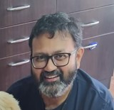
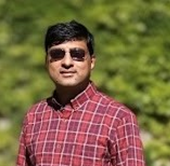
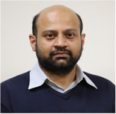
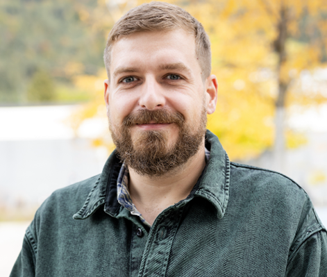
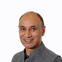

Workshop on Digital Twin Engineering
February 23rd, 2023, IIIT Allahabad, Prayagraj, Uttar Pradesh, India, co-located with ISEC 2023
Environmental uncertainty and hyperconnectivity force techno-socio- economic systems to introspect and adapt to succeed and survive. The current practice is primarily intuition-driven, which is inconsistent with the need for precision and rigor. The concept of digital twins is rapidly emerging as an experimentation aid to help: (i) understand why a system is the way it is, (ii) prepare for possible outlier conditions; and (iii) identify plausible solutions for mitigating the outlier conditions in an evidence-backed manner. However, its effective use is limited to physical and cyber-physical systems that are governed by well- established laws and operate in environments that are relatively static or that evolve slowly. Its effective exploitation is yet to be seen for techno-socioeconomic systems, such as business enterprises and social systems. The system-of-systems nature, inherent uncertainty, inadequate and fragmented data, and dynamic operating environments of these systems make the existing modelling, analysis and simulation techniques inadequate.
This workshop brings together leading researchers and practitioners a wide spectrum of related fields to explore the challenges involved in effectively using digital twin technologies for techno-socio- economic systems, and to exchange ideas, concepts, approaches that aim to address those challenges. Our key focus to address the following central issues:
- Long-term life cycle management of digital twins in symbiosis with their real systems.
- Improving the state-of-the-art modelling and simulation capabilities for digital twins.
- Modelling of socio-techno-economic characteristics of large business and societal systems that include spatiotemporal uncertainty, dynamism, and emergentism.
- Design of collaboration platforms for enabling the joint research work related to digital twins.
Invited Speakers
-
Saumil Merchant
Saumil Merchant
Shell Technology Center, Bangalore
Saumil Merchant is a researcher in the computational and digital sciences organization at Shell Technology Center Bangalore. Prior to joining Shell in 2013, he worked as a HPC Performance Analyst at IBM India Labs. He holds a doctorate in Computer Engineering from University of Knoxville, Tennessee and has wide research interests ranging from advanced visualizations, high performance computing architectures and programming models, machine learning, and Blockchain.
Title: Role of Digital Twin in Decarbonization of our Energy SystemsAbstract Decarbonization of our Energy Systems is one of the biggest challenges facing humankind today. This is a multifaceted problem with many complex challenges spanning technology, geopolitics, economics, development and justice. Easy access to energy is one of the key ingredients which power economies and lift masses out of poverty. Hence the needed transition of the global energy systems to a cleaner future necessitates that society have easy access to more and cleaner energy. Digital has a key role to play to achieve this transition. This talk will focus on role of Digital in this journey and narrowing down further, focus on the digital twin technology and its role as we see it in Shell.
-
Jayendran Venkateswaran
Jayendran Venkateswaran
Indian Institute of Technology, Bombay
Prof. Jayendran Venkateswaran (JV) is an Institute Chair Professor of Industrial Engineering and Operations Research at IIT Bombay, where he has been a faculty since 2005. His current research and teaching interests are in systems thinking, system dynamics, agent-based modeling & simulation, discrete-event simulation, supply chain & sustainability and OR for development. He loves tinkering with Python, R and other open source tools. He is passionate about popularising Operations Research, Simulation and Systems Thinking to help further the understanding of complex socio-economic problems. He has several publications in leading journals and conferences to his credit. He has guided 9 doctoral students and 40+ graduate (Masters’) students. He is also currently the Head of IEOR department.
Title: Exploratory Modelling & Analysis for Managing Deep UncertaintyAbstract Robust decision are becoming increasingly important as compared with optimal decisions, for we want decisions that work effectively in the real-world strife with uncertainty. Uncertainty can be different levels form certainty to deep uncertainty. Exploratory Modelling and Analysis (EMA) is meant to specifically cope with deep uncertainty. It uses computational approaches to analyse complex and uncertain issues. In this talk we will discuss EMA approach, the use of simulations and AI tools, and python-based workbench for analysis of complex systems. Apart from a general overview, this talk will also discuss applications.
-
Varun Ramamohan
Varun Ramamohan
Indian Institute of Technology, Delhi
Dr. Varun Ramamohan is an Assistant Professor in the Department of Mechanical Engineering at the Indian Institute of Technology Delhi. He holds a PhD in Industrial Engineering from Purdue University (USA), and an undergraduate degree in engineering from the National Institute of Technology, Trichy, India. He worked as an Associate Director of Health Economics at the Research Triangle Institute International in North Carolina, USA, prior to joining IIT Delhi. His research interests include probabilistic modeling, simulation, and simulation optimization, with applications in healthcare delivery, health economics and policy, and biomedical engineering.
Title: Introduction to Stochastic Simulation with Applications in Healthcare Delivery SystemsAbstract In this talk, we provide a brief introduction to stochastic simulation modeling, and describe three key modelling paradigms within this field: Monte Carlo, discrete-event and agent-based simulations. We will discuss similarities and differences between digital twins and system simulations. A brief outline of simulation-based optimization will also be provided. Applications of discrete-event and agent-based simulations, with examples of the use of simulation optimization, in the healthcare delivery systems and health economics and policy areas will then be presented.
-
Philipp Zech
Philipp Zech
University of Innsbruck
Philipp Zech is an Assistant Professor at the University of Innsbruck, Department of Computer Science. He is a trained researcher and software engineer with a strong focus on software development and testing, model-driven development and testing, and machine learning. His current research focuses on the creation and operation of digital twins using model repositories.
Title: Digital Twins? Yes, but how?Abstract The potential of digital twins is without a doubt. Unfortunately, however, a digital twin is not a one-man show but requires the collaboration of many stakeholders. This is especially paramount in the event of building digital twins of systems of systems, e.g., smart buildings or cities. This situation is aggravated by the fact that most stakeholders rely on their own tools and modeling formalisms eventually yielding a fractured delivery landscape. Based on this observation, we advocate a digital twin repository in the spirit of traditional model repositories for creating and operating virtual replicas of digital twins throughout the lifecycle of the twinned system. In this talk, Philipp Zech will present industrial experiences on the different uses of such a model repository to support the creation and operation of digital twins throughout the lifecycle of the twinned systems.
Panel Discussion
Title: Reimagine Tomorrow using Digital Twin: Opportunities, Challenges and Future.
Panelists:
Vinay Kulkarni
Distinguished Chief Scientist and Head of Software Systems Research, Tata Consultancy Services Research, India

Prof. Balbir Barn
Academic Dean of Faculty of Science and Technology, Middlesex University, UK
Prof. Tony Clark
Deputy Dean, College of Engineering and Computer Science, Aston University, UK
Schedule
Will be published soon...
Venue
Please check out the conference page for detailed informations on the workshop's location.
Organizers
- Souvik Barat is a distinguished scientist at TCS Research and a visiting researcher at Middlesex University London. He is involved in modelling and simulation of complex business systems for more 25 years.
- Aditya Paranjape is a senior scientist at TCS Research and an Honorary Lecturer in the Department of Aeronautics at Imperial College London. He works on modeling and optimal control problems with application to industrial processes and on emerging behaviour in networked systems consisting of intelligent, goal-driven agents.
Contact
- Souvik Barat (souvik.barat@tcs.com)